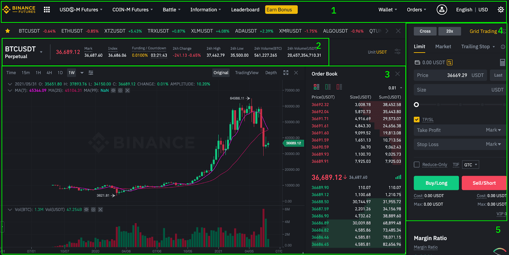
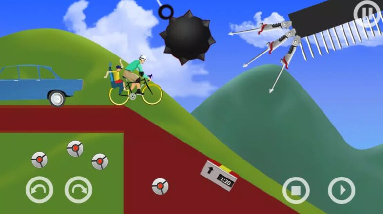

Binance
Binance is an online exchange where users can trade cryptocurrencies. It supports hundreds of the most commonly traded cryptocurrencies. Binance provides a crypto wallet for traders to store their electronic funds. The exchange has supporting services for users to earn interest or transact using cryptocurrencies.

Happy wheels
Happy Wheels is a ragdoll physics-based platform browser game developed and published by Fancy Force. Created in 2010 by video game designer Jim Bonacci, the game features several player characters using various and often atypical vehicles to traverse the game's many user-generated levels. The game is best known for its graphic violence and the amount of user-generated content its players produce on a regular basis, with game maps shared on a public server. A sequel has been announced to be in development since 2019.

Discord
Discord is an instant messaging and VoIP social platform. Users have the ability to communicate with voice calls, video calls, text messaging, media and files in private chats or as part of communities called "servers".